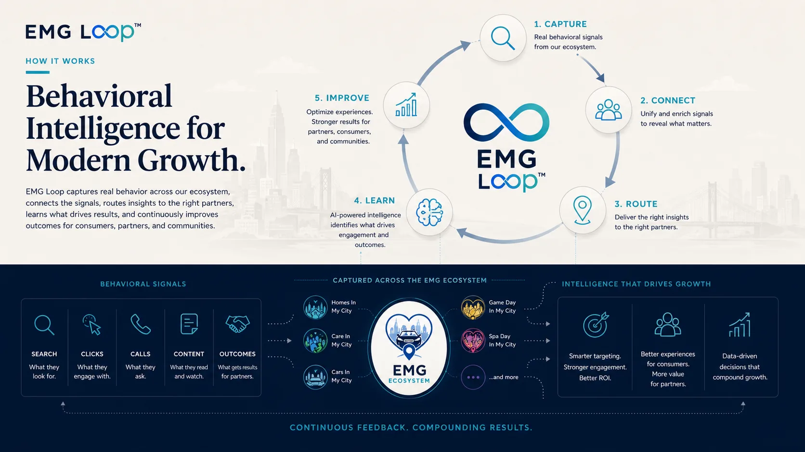
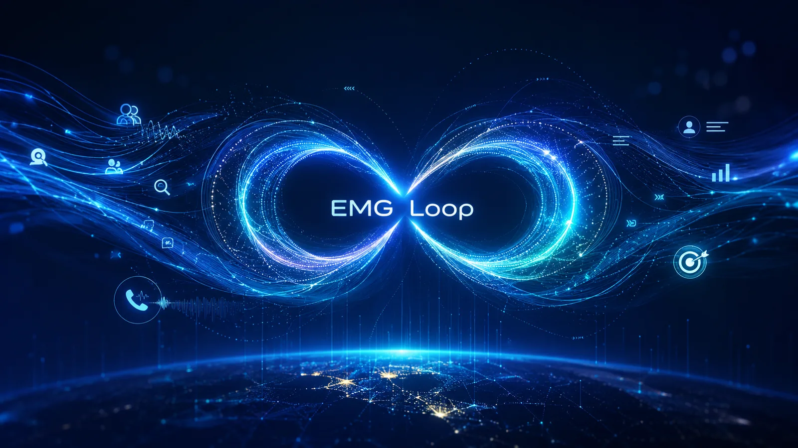
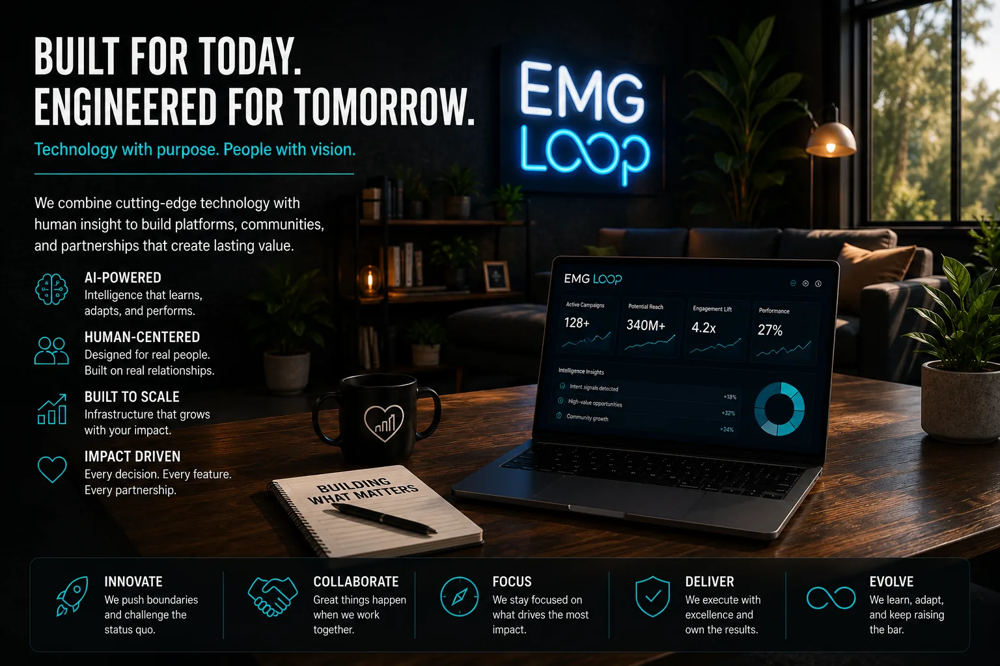

Behavioral signal mapping
Understand intent across consumer journeys and partner activity.

Loop is the intelligence layer: the place where searches, clicks, calls, creator actions, property engagement, and partner outcomes become a smarter system.
Real intent becomes signal. Signal becomes context. Context helps EMG route the next conversation, improve the next experience, and make better decisions across the network.
Understand intent across consumer journeys and partner activity.
Use guides and automation to help people move through decisions.
Connect people to useful local resources at the right moment.
Build secure, owned intelligence that improves over time.

Loop is the intelligence layer designed to connect the signals that conventional reporting leaves scattered.
A search, article, comparison, creator interaction, form, call, booking, and eventual outcome are not isolated events. They are chapters in the same decision. Loop brings those chapters together so teams can understand intent, identify friction, improve experiences, and invest with greater precision.
The goal is not surveillance. It is responsible context: using first-party behavior to make guidance more relevant and outcomes more accountable.
Loop is being built around first-party relationships, consent, transparency, and practical relevance.
The objective is not to know everything about everyone. It is to understand enough context to make the experience more helpful, measurement more honest, and investment more precise.

As the properties, guides, calls, creators, partners, and communities expand, Loop creates the shared memory that allows them to operate as one system.
Technology provides the scale. Human judgment provides the meaning. Neither is sufficient alone.
Talk with EMG about the signals, decisions, and outcomes your current systems leave scattered.